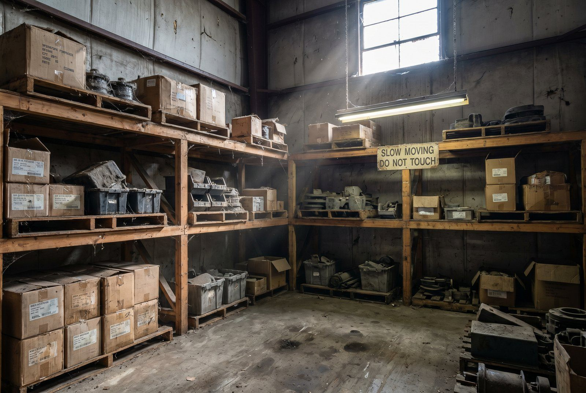

2 mio. kr. på lagerhylden koster 500.000 kr./år bare at have stående. Carrying cost er typisk 20-30% af lagerværdien.
Komponenter i carrying cost
| Komponent | % af lagerværdi per år |
|---|---|
| Kapitalkostning (alternativomkostning) | 6-10% |
| Lagerplads (husleje, el, forsikring) | 3-6% |
| Svind og beskædigelse | 1-3% |
| Håndtering | 2-4% |
| Forældelse og nedskrivning | 2-8% |
| Total carrying cost | ~20-30% |
👉 Få beregnet carrying cost per SKU og identificer dine dyreste slow movers. Kontakt SmartPack
Regnestykket
Per 100.000 kr. varelager reduceret:
- Frigivet kapital til anden investering.
- 25.000 kr./år sparet i carrying cost.
- 5-10 m² frigivet lagerplads.
Safety stock vs. overstock
Korrekt safety stock forhindrer stockout uden at binde undig kapital. Formlen er:
Safety Stock = Z × σ(demand) × √(Lead Time)
Z = 1,65 for 95% service level. Typiske anbefalede niveauer:
- A-varer (høj omsatning): 7-14 dages salg.
- B/C-varer (lavere omsatning): 14-30 dage.
Typiske fejl
- Bestiller på mavefornømmelse frem for data.
- Bruger samme safety stock for alle SKU'er uanset omsatningshastighed.
- Rydder aldrig op i slow movers, der binder kapital år efter år.
SmartPack og beholdningsomkostninger
SmartPack beregner carrying cost per SKU, viser omsatningshastighed og understøtter automatisk reorder-punkt, så du altid har den rigtige mængde på hylden, hverken for meget eller for lidt.